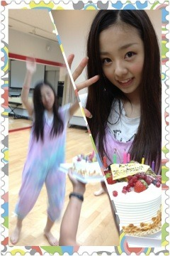

| 2012/07 25 Wed | 今日も元気に頑張るぞっ♪♪(o・ω・)ノ)) |
７月20日ゆったん、
７月23日ろってぃー
お誕生日おめでとう


いつもいつもありがとね(o^^o)
大好きよー‼

すてきな一年になりますように´っω･*
ろうそくの火を吹き消すゆったんと
満面の笑みのゆったん♡

ケーキに喜んで飛びはねてカメラに写らないろってぃーと
ケーキと一緒に笑顔のろってぃー♡
2人とも可愛いなーーヽ(^0^)ﾉ
すきよすきよ

え⁇ケーキはものの３分でなくなりましたよ⁇
戦場でしたよ⁇(*´艸`)ふふ
私服の感想ありがとう(o^^o)
好評みたいでよかったよかった

だから今日は前回のイメージとは
全く違う私服で
昨日は過ごしてたよ( ´ ▽ ` )ﾉ
じゃーん
バットマンＴシャツに
デニムスカートとゆーー
シンプルスタイル

Ｔシャツに一目惚れしちゃって(*/ｪ＼*)
今回もまた感想教えてくださいな♪
質問の答えありがとーう＊‼
黒髪人気だったね

よかった安心♡
茶髪もいいけどまだまだ先だね

ふふ
今日の質問っ( ´ ▽ ` )ﾉ‼
朝はパン派⁇ご飯派⁇べつのもの派⁇
ちなみにちはるはパン派ー
今日はじゃこチーズトーストだったよ‼
意外とおいしーの

今日は久しぶりに朝のこの時間帯に更新ーーーつーつー
今日は通学じゃなくて通勤か⁉
とゆことで今日はまだ内緒のお仕事があるんよ＼(^^)／ふふ
おーけーなったら報告しますね‼

頑張ってきますヽ(^0^)ﾉ
ばいるんっ
るんるんっ
ちはるんっ
♪♪(o・ω・)ノ))
コメント(66)
2012/07/25 07:36